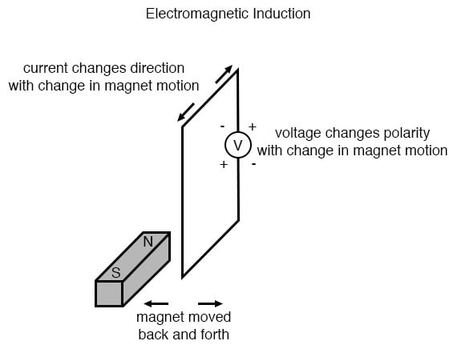
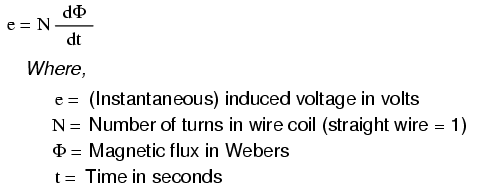

While Oersted’s surprising discovery of electromagnetism paved the way for more practical applications of electricity, it was Michael Faraday who gave us the key to the practical generation of electricity: electromagnetic induction. Faraday discovered that a voltage would be generated across a length of wire if that wire was exposed to a perpendicular magnetic field flux of changing intensity.
An easy way to create a magnetic field of changing intensity is to move a permanent magnet next to a wire or coil of wire.
Remember: The magnetic field must increase or decrease in intensity perpendicular to the wire (so that the lines of flux “cut across” the conductor), or else no voltage will be induced.

Faraday was able to mathematically relate the rate of change of the magnetic field flux with induced voltage (note the use of a lower-case letter “e” for voltage. This refers to instantaneous voltage, or voltage at a specific point in time, rather than a steady, stable voltage.):

The “d” terms are standard calculus notation, representing rate-of-change of flux over time. “N” stands for the number of turns, or wraps, in the wire coil (assuming that the wire is formed in the shape of a coil for maximum electromagnetic efficiency).
This phenomenon is used in the construction of electrical generators, which use mechanical power to move a magnetic field past coils of wire to generate voltage. However, this is by no means the only practical use for this principle.
If we recall that the magnetic field produced by a current-carrying wire is always perpendicular to that wire, and that the flux intensity of that magnetic field varies with the amount of current through it, we can see that a wire is capable of inducing a voltage along its own length simply due to a change in current through it. This effect is called self-induction: a changing magnetic field produced by changes in current through a wire inducing voltage along the length of that same wire. If the magnetic field flux is enhanced by bending the wire into the shape of a coil, and/or wrapping that coil around a material of high permeability, this effect of self-induced voltage will be more intense. A device constructed to take advantage of this effect is called an inductor, and will be discussed in greater detail in the next chapter.
REVIEW: